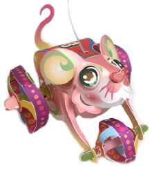
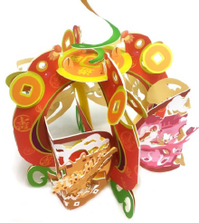

活動DM下載
首 頁
最新消息
關於燈會
燈區介紹
表演節目
活動資訊
交通資訊
2020光之桃園・選單
首 頁
最新消息
關於桃園燈節
燈區介紹
表演節目
活動資訊
交通資訊
首頁
活動資訊
燈會小提燈
特色活動
燈會小提燈
刷市民卡換小禮物
景點推薦
手作提燈
桃園燈會期間每周六(2/1、2/8)發送【鼠來運轉】、每周日(2/2、2/9)發送【錢鼠遊桃園】。
燈會活動期間每週六、日下午5點開始，數量有限，送完為止。
新勢公園及光明公園小提燈發放處。

首創能「溜」上街的小提燈
・元寶形提把：
手握元寶「鼠來發」
・三節式提線：
自由調節長度，可提、可拉、可互動
・豐滿如水蜜桃的身材：
豐衣足食，國泰民安
・大大的圓耳：
招人氣、兼招財
・上翹的尾巴：
後勢看俏、一路長發
・腿部的水滴狀鏤空：
風調雨順、風生水起
・腳部踩風火輪：
財源滾滾，三元及第
・可動的前肢：
可互動、可站立、可奔跑
・紅色上翹的尾巴：
路長紅、後勢看俏

傳統宮燈造型，還能當桌燈點綴環境
・
錢鼠身著春、福、壽、喜，為來年獻上祝福之意，雙耳以銅錢表示，共有八枚，意喻財源廣進。
・
鼠前扣點，以龍潭花生為設計概念，扣住銅錢意指來年豐衣足食。
・
鼠尾造型，如橫寫之阿拉伯字之「8」，取其諧音「發」，意味橫著發。
・
燈體四面，分別描繪出桃園特色景點如「慈湖春曉」、「石門勝景」、「大溪老街」、「機場迎賓」等特色。
・
燈底下的古錢「唯吾知足」其中的意義是要我們學習外圓（寛以待人）內方（嚴以律己）。
・
除了元宵節可提燈之外，也可靜置在桌上，做為桌燈使用。